Network Printer Setup
Prerequisites
You have permission to setup the network printer
Steps:
- Go into printer's settings or print a config page and determine the printer's MAC address
- Printers usually have separate MAC addresses based on wired or wireless connections
- Choose the appropriate MAC address for your situation
- click on the start button
- click Server Manager

- click tools on the top right
- then click DHCP
- click the URL dropdown, then click IPV4 dropdown
- click the Scope dropdown, the click Address Pool
- Determine the list of available IP addresses
- Pick an IP address to assign to the network printer
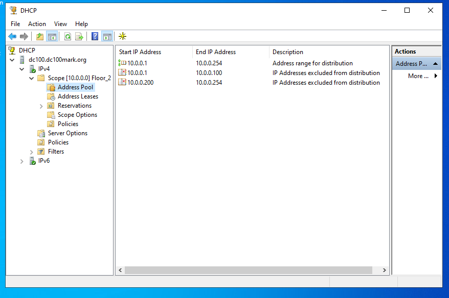
- Right click the Reservations folder
- Click new reservation
- A new reservation window will popup
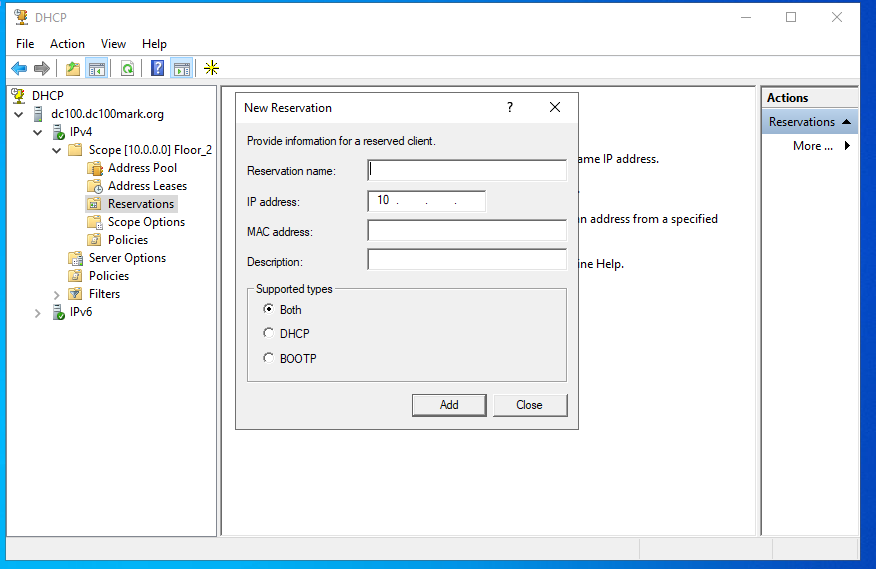
- Give the printer a name
- Type in an available IP address from the address pool
- Type the printer's MAC address
- Type a description
- Leave support type to both
- Click Add once completed
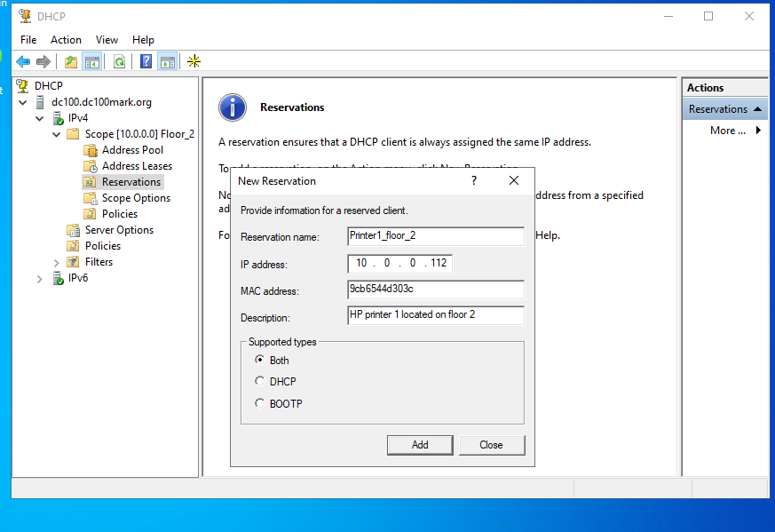
- The IP address and the printer name would appear under the Reservations folder
- It should also be in the Address Leases folder
- However, since the printer is not yet connected it sould state Inactive

- Next, go into Windows Administrative tools and open DNS
- We need to tell the DNS server that the printer is located at the IP address we previously determined
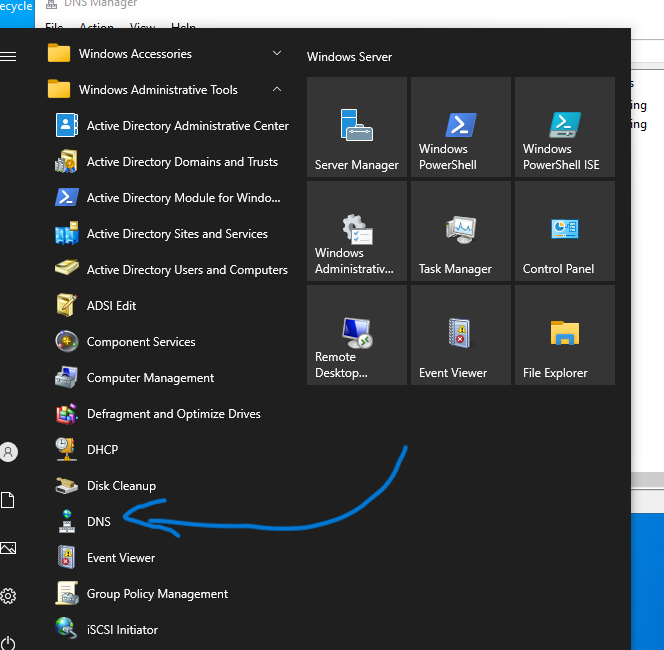
- In the Forward lookup zones folder, locate the company's/ specified URL
- Notice that no printer entries are added on the right side (Host A entries)
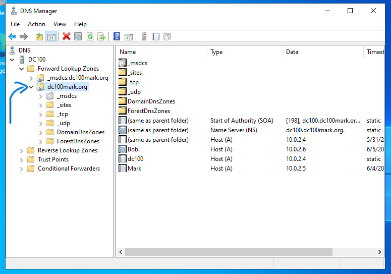
- Right click the URL and click New Host (A)
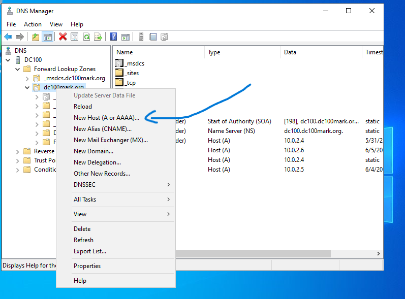
- A New Host window will popup
- Name it the same name you gave to your printer
- Add the specified IP address you gave to the printer
- Click Add Host once completed
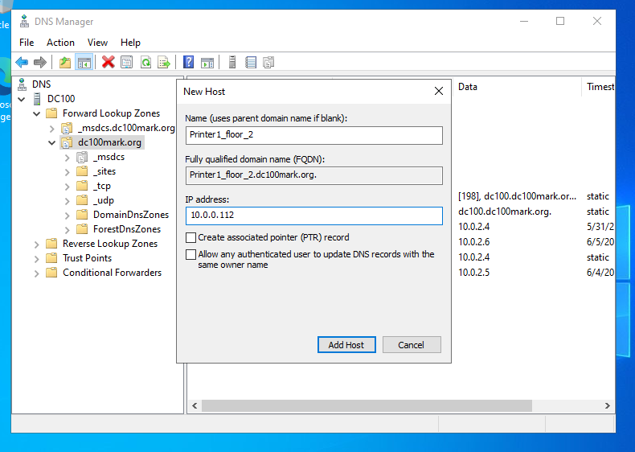
- Notice the printer entry is now added
- The IP address is also specified
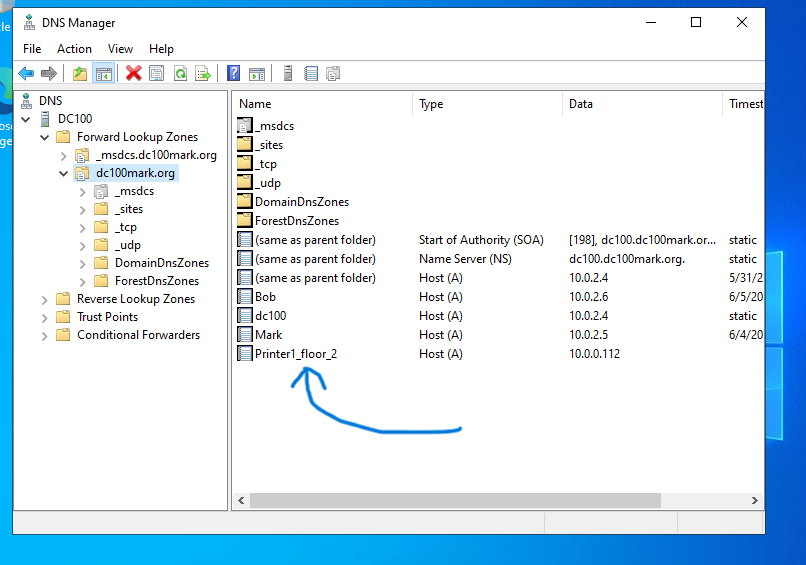
- We now need to add the printer to the Print Server
- A print server is a central computer (usually Windows Server) that:
- Knows about all the printers
- Holds the printer drivers
- Controls who can print
- Manages the print queue
- Shares printers to users on the network
- click the start button and click the down arrow on windows admin tools
- locate and click on Print Management

- Click on the Print Servers dropdown, then the local server's dropdown
- The Printers icon should be located at the bottom
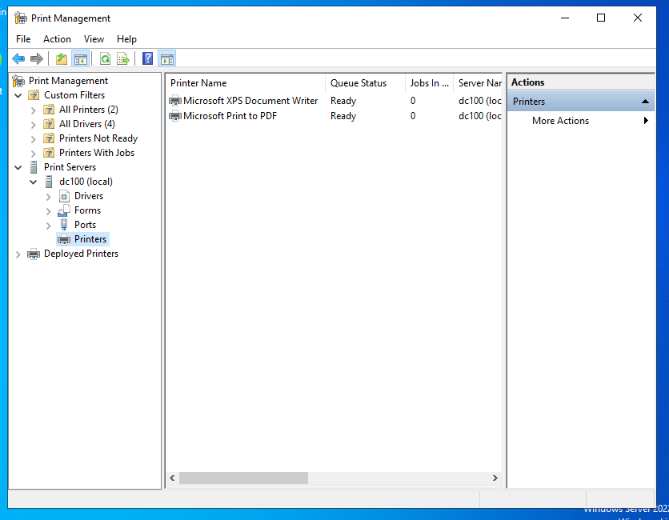
- Right click the Printers icon and click Add Printer
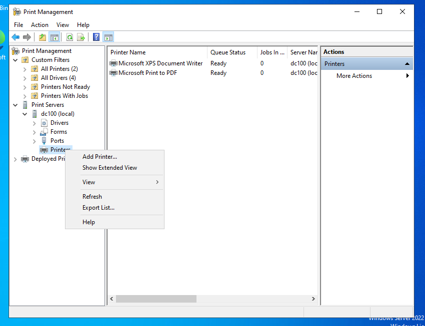
- Check the option that says add by Printer IP or Hostname
- click next
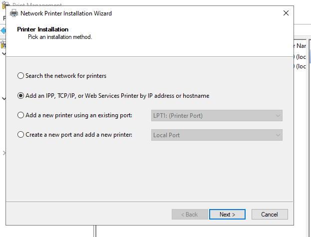
- Change the type of device to TCP/IP Device
- Type in the printer's name or its IP address
- Port name should auto populate
- check the auto detect printer driver checkbox
- Click next once completed
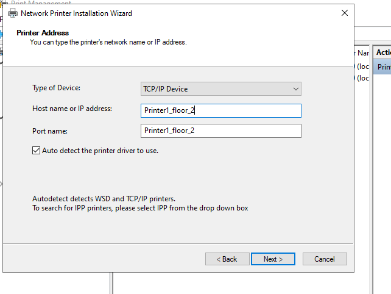
- Pick the appropriate drive for the printer
- Click next
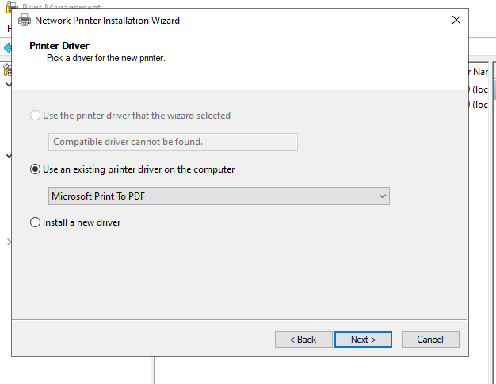
- Give the printer a name
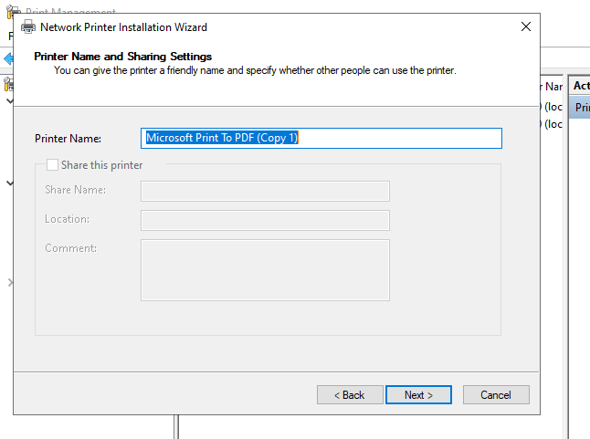
- The printer information will be displayed a last time
- click next
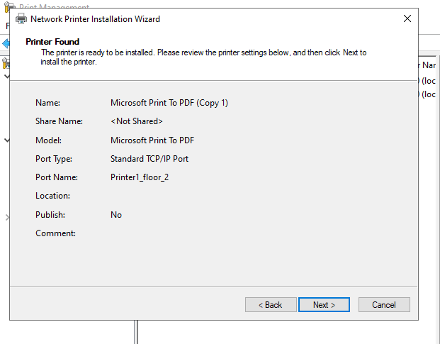
- Click Finish to complete the install wizard
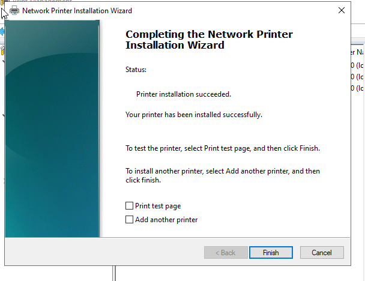
- The new printer will appear on the list of printers
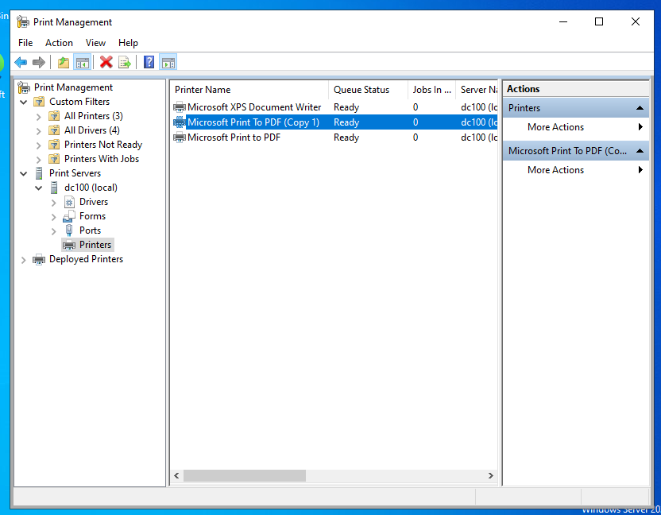